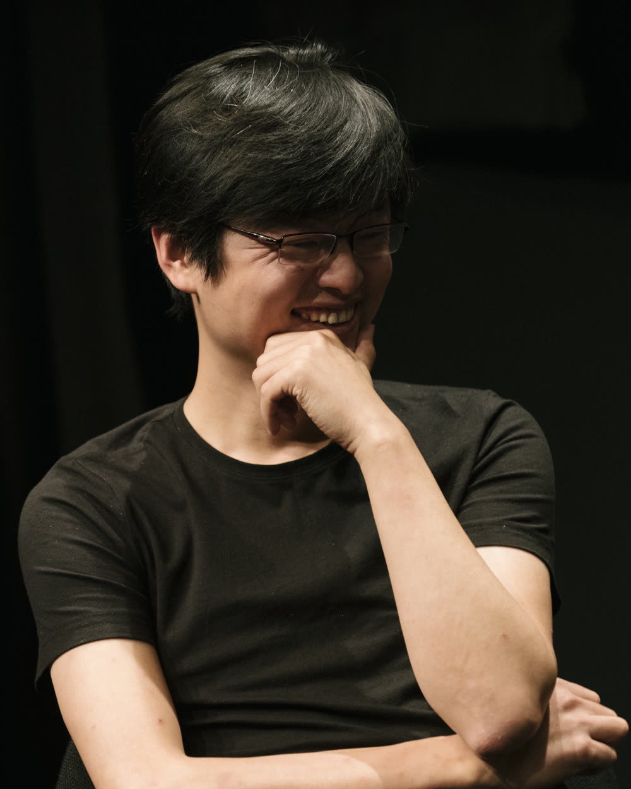

About
Ling Fan 范凌

Ling Fan is Professor in Design AI at Tongji University, founding director of its Design Artificial Intelligence Lab, and founder and chairman of Tezign. Trained as an architect at Princeton and the Harvard Graduate School of Design, he studies the computability of creativity: how designers can shape AI itself and, through it, redesign systems and organizations. His research is carried into AI systems used by more than 200 enterprises and over one million professionals.
His work has been covered by Bloomberg, Forbes and Harvard Business Review.
Contact: lfan@tongji.edu.cn
Education
| 2014 | Harvard University, Graduate School of Design, Doctor of Design (DDes) |
| 2007 | Princeton University, Master of Architecture (MArch) |
| 2005 | Tongji University, Bachelor of Architecture (BArch) |
Academic experience
| 2016–present | Tongji University, College of Design and Innovation, Shanghai Professor in Design AI |
| 2017–present | Tongji University, Design Artificial Intelligence Lab Founding Director |
| 2025–present | Shanghai Research Institute for Intelligent Autonomous Systems Professor |
| 2013–2015 | University of California, Berkeley Lecturer |
| 2008 | Oslo School of Architecture and Design Visiting Lecturer |
| 2007–2011 | Central Academy of Fine Arts, Beijing Lecturer |
| 2007–2010 | Princeton Center for Architecture, Urbanism, and Infrastructure Research Fellow |
Other service
| 2026– | Business of Design Week (BODW), Hong Kong Design Centre Member, Steering Committee |
| 2026 | World Design Cities Conference (WDCC) Co-Chief Curator |
| 2024– | China Europe International Business School (CEIBS) Chairman, AI and Business Initiative |
| 2024– | China Social Entrepreneur Foundation Trustee |
| 2024 | Design Intelligence Award (DIA), Hangzhou Nominating Juror |
| 2024 | Global Design Award, Shenzhen Juror |
| 2022– | National Industrial Design Center, China Chief Expert |
| 2020– | Future Science Forum Trustee of Youth Council |
| 2019– | IEEE Council for Extended Intelligence Member |
| 2018– | Yunqi Academy of Engineering Trustee |
| 2016– | Aspen Global Leadership Network Member |
Recognition
| 2025 | VOGUE Business New Tech Pioneer |
| 2024 | Forbes Disruptive Founders |
| 2023 | Harvard Business Review New Growth Pioneer |
| 2020 | IDEAT Future Award |
| 2019 | Fortune 40 Under 40 |
| 2018 | Fast Company China's 100 Most Creative People in Business |
| 2018 | Guanghua Longteng Award Top 10 Outstanding Young Designers of China |
| 2017 | World Economic Forum Young Global Leader |
| 2016 | Aspen Institute China Fellowship |
| 2016 | World Economic Forum Cultural Leader |
| 2015 | Design Trust / M+, Hong Kong Design Fellowship (inaugural) |
| 2015 | Shanghai Pujiang Talent Program |
| 2013 | Ministry of Foreign Affairs and Economic Affairs, Netherlands Future Leaders Program |
| 2011–2014 | China Scholarship Council National Scholarship |
| 2011 | Martell Art Foundation Focus on Future Art Talents Program (inaugural cohort) |